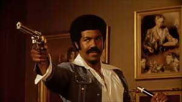

Hello everybody !
Jimmy, Programmer Junior

hey, I'm Jimmy here you can discover some of my favourite movies
Movies
|  |
Black DynamiteL'histoire de la légende africaine-américaine des années 1970 : Black Dynamite. |
Gran TorinoWalt Kowalski est un ancien de la guerre de Corée, un homme inflexible, amer et pétri de préjugés surannés. Après des années de travail à la chaîne, il vit replié sur lui-même, occupant ses journées à bricoler, traînas200ser et siroter des bières. Avant de mourir, sa femme exprima le voeu qu'il aille à confesse, mais Walt n'a rien à avouer, ni personne à qui parler. |
|

|
Forest GumpAu fil des différents interlocuteurs qui viennent s'asseoir tour à tour à côté de lui sur un banc, Forrest Gump raconte la fabuleuse histoire de sa vie. Sa vie est à l'image d'une plume qui se laisse porter par le vent, tout comme Forrest se laisse porter par les événements qu'il traverse dans l'Amérique de la seconde moitié du 20e siècle. |